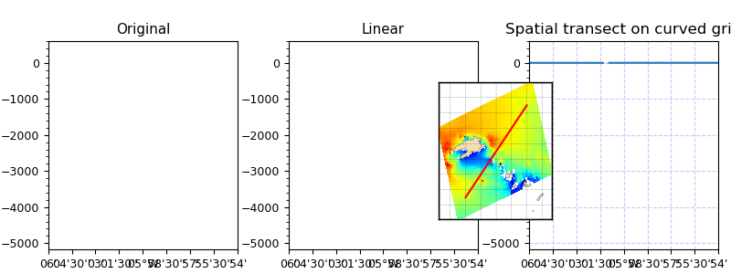

3.5.6.35. test_regrid_transect_curvgrid.py – Test transect() on a curvilinear grid¶

"""Test :func:`~vacumm.misc.grid.regridding.transect` on a curvilinear grid"""
# Inits
ncfile = "swan.four.nc"
lon0 = -5.1
lon1 = -4.9
lat0 = 48.35
lat1 = 48.55
# Imports
from vcmq import cdms2, data_sample, N, transect, curve2, code_file_name, os, \
add_map_lines, P, add_shadow
# Read data
f = cdms2.open(data_sample(ncfile))
hs = f('HS', squeeze=1)
f.close()
# Compute transect
hst, lons, lats = transect(hs, (lon0,lon1), (lat0,lat1), getcoords=True)
# Plot along time
s = curve2(hst, figsize=(8,3), title='Spatial transect on curved grid',
show=False, top=0.85)
# Add a small map to show the transect positions
o = add_map_lines(hs, lons, lats, map_bgcolor='w', map_bbox= [.6, .2, .3, .5], map_anchor='W')
# Save
figfile = code_file_name(ext='png')
if os.path.exists(figfile): os.remove(figfile)
s.savefig(figfile, pdf=True)